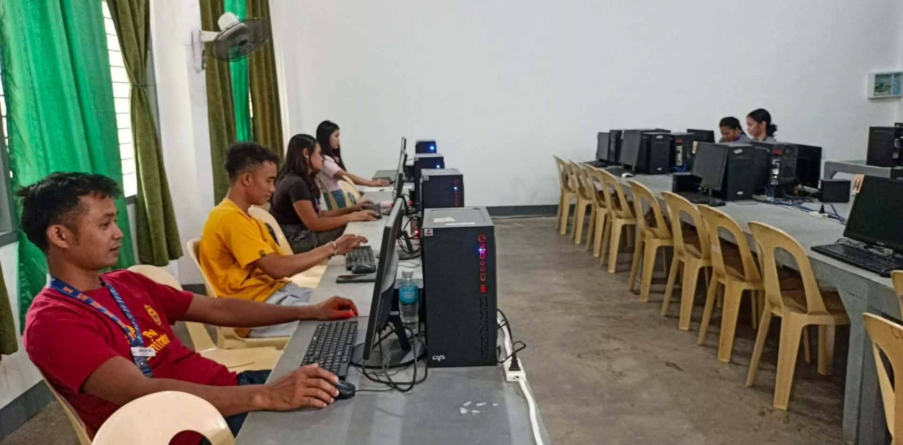
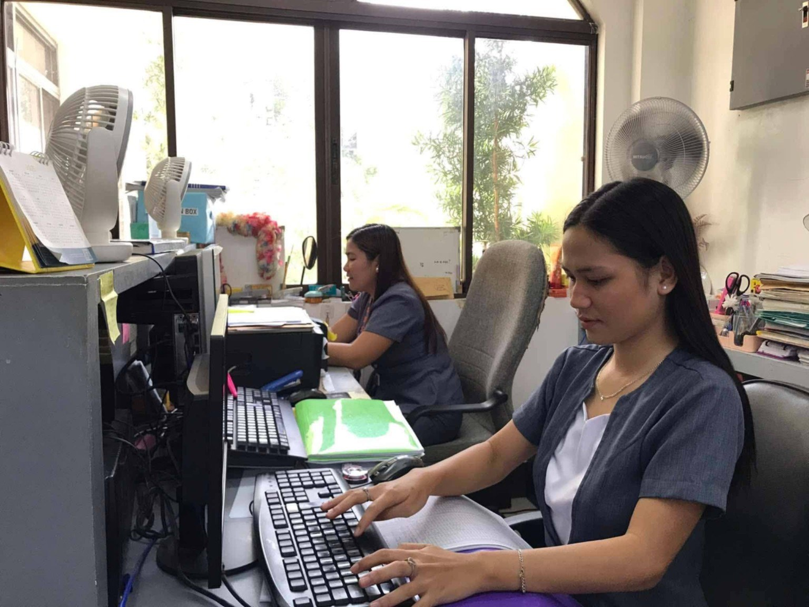
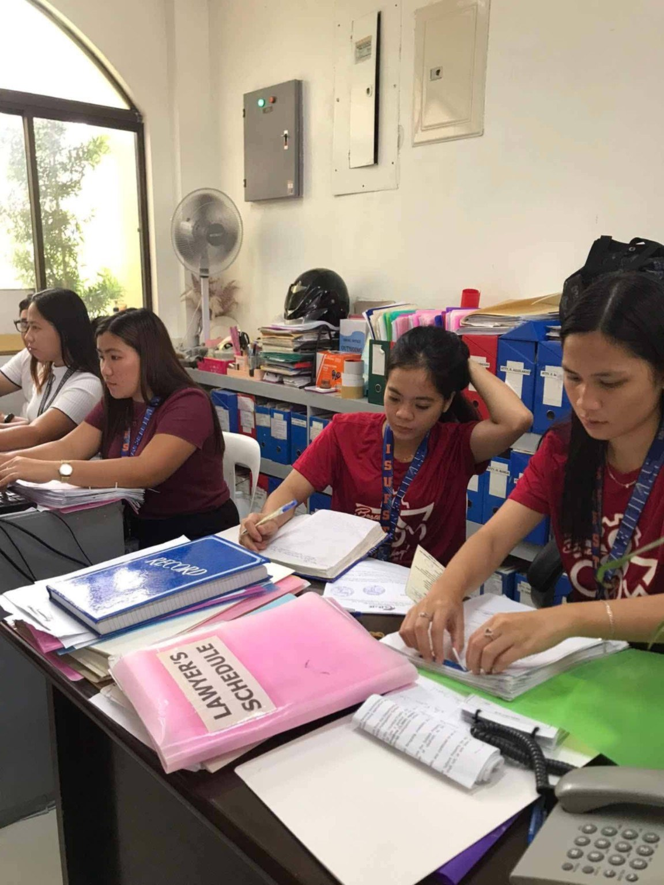
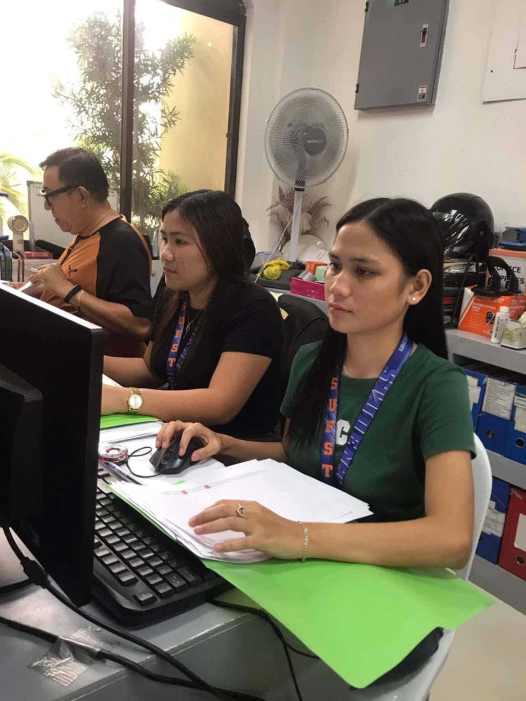
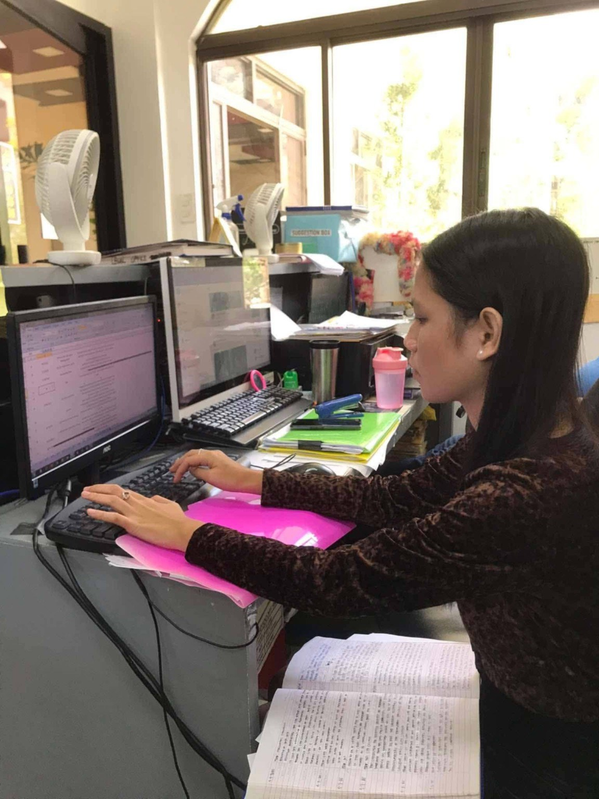

Activities & Experiences
A collection of photographs from computer-based learning and office-related activities. These moments show the practical side of learning and applying digital skills.
Practice, participation, and progress.
Activities are an important part of learning because they give students opportunities to apply ideas, work with digital tools, and become more familiar with computer-based tasks.

Computer Laboratory Session
A classroom learning environment with students working at desktop computers.

Hands-On Computer Work
Using a computer while reviewing notes and working through a task.

Office-Related Task Practice
Reviewing documents and organizing paperwork as part of practical office work.

Computer-Based Class Activity
Taking part in a learning activity that uses desktop computers and digital resources.

Individual Computer Practice
Working independently at a computer while keeping notes and learning materials nearby.